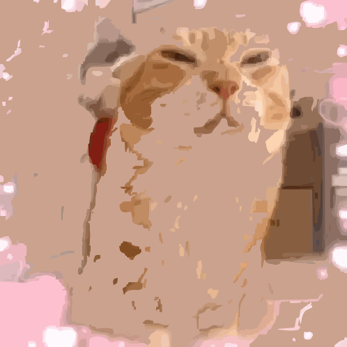

Font Populer
Roboto
Roboto adalah font sans-serif yang dirancang oleh Christian Robertson untuk Google sebagai bagian dari Android OS. Font ini memperkenalkan perpaduan antara bentuk huruf mekanis dan struktur humanistik, yang membuatnya fleksibel dan mudah dibaca pada berbagai ukuran layar. Roboto dirancang dengan perhatian terhadap detail spasial dan ritme antar huruf, sehingga cocok untuk antarmuka pengguna (UI), aplikasi, dan desain web.
Inter
Inter adalah font sans-serif modern yang dirancang untuk digunakan dalam antarmuka pengguna digital. Font ini dirancang oleh Rasmus Andersson dengan fokus pada keterbacaan di layar digital dengan resolusi tinggi. Inter mendukung berbagai fitur typografi seperti ligatures dan variable weight, menjadikannya pilihan utama dalam desain UI modern.
Poppins
Poppins adalah font geometrik sans-serif yang dirancang oleh Indian Type Foundry dan dirilis pada tahun 2014. Font ini memiliki karakteristik geometris yang kuat dengan bentuk huruf bundar sempurna, menciptakan tampilan modern dan minimalis. Salah satu keunggulan Poppins adalah dukungannya terhadap skrip Devanagari dan Latin, menjadikannya sangat populer di kalangan desainer dari Asia Selatan. Poppins juga hadir dalam banyak varian ketebalan, memungkinkan fleksibilitas dalam desain UI, branding, dan editorial. Desainnya yang bersih namun berani menjadikan Poppins populer di situs web startup, aplikasi mobile, dan proyek-proyek desain grafis kontemporer.
Montserrat
Montserrat adalah font sans-serif bergaya urban yang dirancang oleh Julieta Ulanovsky pada tahun 2011. Font ini terinspirasi oleh papan nama dan poster di lingkungan Montserrat di Buenos Aires, Argentina. Karakter hurufnya memiliki bentuk yang lebar dan proporsional dengan ujung-ujung yang bersih, menjadikannya ideal untuk penggunaan pada judul, logo, dan desain yang membutuhkan kehadiran visual kuat. Montserrat membawa nuansa retro-modern, dan sering digunakan dalam desain situs web, media sosial, serta poster yang ingin tampil tegas namun bersahabat. Font ini tersedia dalam berbagai varian berat dan gaya, dari tipis hingga ekstra-bold.
Open Sans
Open Sans adalah salah satu font sans-serif paling banyak digunakan secara global, dirancang oleh Steve Matteson dan dirilis oleh Google pada tahun 2011. Font ini dibuat dengan pendekatan neutral yet friendly, yang membuatnya sangat fleksibel dan cocok untuk penggunaan di web, mobile, maupun cetak. Desain Open Sans menonjolkan keterbacaan dengan bentuk huruf terbuka, kontras rendah, dan tinggi-x yang besar. Font ini sangat optimal untuk paragraf panjang maupun elemen navigasi kecil dalam antarmuka pengguna. Keandalan Open Sans menjadikannya pilihan default bagi banyak situs web pemerintahan, perusahaan, dan aplikasi digital.
Lato
Lato adalah font sans-serif yang dirancang oleh desainer asal Polandia, Łukasz Dziedzic, pada tahun 2010. Awalnya dibuat untuk proyek komersial, font ini kemudian dirilis secara gratis melalui Google Fonts. Nama Lato berarti "musim panas" dalam bahasa Polandia, mencerminkan karakteristiknya yang hangat dan bersahabat. Lato dirancang untuk keseimbangan antara struktur profesional dan sentuhan humanistik. Dengan bentuk huruf yang bulat namun stabil, Lato sangat ideal untuk antarmuka pengguna, presentasi, serta konten web yang memerlukan kejelasan visual dan kehangatan tipografis. Keberadaan banyak varian berat (dari Hairline hingga Black) juga membuatnya sangat fleksibel untuk berbagai konteks desain.
Playfair Display
Playfair Display adalah font serif modern dengan gaya klasik, dirancang oleh Claus Eggers Sørensen. Font ini mengambil inspirasi dari era transisi tipografi pada akhir abad ke-18, ketika pena bulu mulai digantikan oleh cetakan logam. Playfair Display menampilkan kontras tajam antara garis tebal dan tipis serta memiliki bentuk huruf yang elegan dan berkelas. Font ini sering digunakan dalam judul, majalah, undangan, dan editorial mode karena memberikan kesan anggun dan profesional. Karakternya yang dramatis dan tipikal serif menjadikannya pasangan sempurna untuk teks yang ingin ditonjolkan dengan gaya klasik kontemporer.
Ubuntu
Font Ubuntu adalah bagian dari identitas visual sistem operasi Ubuntu Linux dan dikembangkan oleh Dalton Maag Ltd pada tahun 2010. Font ini dibuat dengan tujuan menggabungkan estetika teknis dan kemanusiaan, mencerminkan semangat komunitas open-source. Ubuntu memiliki karakter yang khas, dengan lengkungan lembut dan bentuk huruf yang unik namun mudah dibaca, baik di layar kecil maupun besar. Font ini juga dirancang untuk mendukung berbagai bahasa dan sistem penulisan. Karena tampilannya yang modern dan bersahabat, font Ubuntu banyak digunakan dalam antarmuka pengguna dan branding teknologi.
Libre Franklin
Libre Franklin adalah interpretasi modern dari font klasik Franklin Gothic, yang dirancang oleh Impallari Type sebagai proyek open-source. Font ini mempertahankan gaya grotesque sans-serif khas abad ke-20, tetapi diperhalus untuk memenuhi standar desain kontemporer. Libre Franklin memiliki tampilan yang berani, profesional, dan serbaguna. Ini menjadikannya sangat cocok untuk headline, antarmuka pengguna, dan bahkan teks tubuh jika digunakan pada ukuran yang sesuai. Dengan lebih dari 18 gaya berbeda, Libre Franklin sering digunakan oleh lembaga pemerintahan, media digital, dan publikasi editorial karena mampu menyampaikan kesan yang kuat namun tetap netral.
Nunito
Nunito adalah font sans-serif dengan ujung huruf membulat (rounded terminals), dirancang oleh Vernon Adams. Font ini menggabungkan kehangatan estetika dengan efisiensi tipografi, menjadikannya ideal untuk antarmuka pengguna dan desain yang ingin tampil ramah. Nunito tersedia dalam dua versi utama: Nunito reguler dan Nunito Sans (tanpa gaya membulat ekstrem), keduanya menawarkan berbagai varian berat. Font ini memberikan kesan modern, bersahabat, dan sangat baik dalam hal keterbacaan di layar digital. Nunito sering digunakan untuk situs pendidikan, startup teknologi, dan dashboard aplikasi karena tampilannya yang seimbang dan mudah dicerna.
Format Gambar Populer
JPEG
JPEG menggunakan kompresi lossy yang membagi gambar menjadi potongan kecil untuk mengurangi detail tak terlihat, sehingga ukuran file bisa sangat kecil. tidak mendukung animasi atau transparansi, mendukung hingga 24 bit warna (sekitar 16,7 juta warna) dan diakui di hampir semua perangkat, aplikasi, dan browser.
- Kelebihan : Kompresi sangat efektif sehingga file bisa diperkecil drastis, kompatibilitas hampir sempurna di berbagai platform
- Kekurangan : Kualitas menurun dan muncul artefak saat kompresi tinggi, tidak bisa menyimpan transparansi
- Kegunaan : Fotografi digital, gambar untuk web/email, materi presentasi, thumbnail.
PNG
PNG merupakan format gambar raster dengan kompresi lossless (algoritma DEFLATE) yang mendukung transparansi (alpha channel) dan kedalaman warna hingga 48-bit (16 bit per saluran RGB). Tidak mendukung animasi, menghasilkan ukuran file lebih besar dibanding format lossy seperti JPEG, namun kompatibilitasnya universal di berbagai perangkat lunak dan browser.
- Kelebihan : Mempertahankan kualitas gambar tanpa artefak kompresi; memungkinkan transparansi kompleks untuk desain fleksibel.
- Kekurangan : Ukuran file lebih besar daripada format lossy; tidak memiliki dukungan animasi bawaan.
- Kegunaan : Grafis web, logo, ikon, elemen antarmuka pengguna.
GIF

GIF merupakan format gambar raster dengan kompresi lossless (algoritma LZW) yang mendukung animasi dan transparansi 1-bit (on/off). Memiliki palet warna terbatas (8-bit/256 warna), menghasilkan ukuran file relatif kecil untuk grafis sederhana, tetapi kurang cocok untuk gambar kompleks. Kompatibilitasnya universal di hampir semua platform dan browser.
- Kelebihan : Mendukung animasi multi-frame; kompatibilitas luas di berbagai perangkat dan aplikasi.
- Kekurangan : Terbatas pada 256 warna; ukuran file membesar untuk gambar detail atau gradien halus.
- Kegunaan : Animasi pendek, meme, ilustrasi sederhana, ikon transparan.
BMP
BMP adalah format gambar raster tanpa kompresi yang menyimpan setiap piksel secara langsung; tidak mendukung animasi atau transparansi penuh; menghasilkan ukuran file sangat besar; mendukung berbagai kedalaman warna (hingga 32 bit); dan didukung luas di berbagai sistem, meski jarang digunakan di web.
- Kelebihan : Kualitas gambar utuh tanpa kehilangan data, struktur sederhana dan mudah di proses
- Kekurangan : Ukuran file sangat besar, tidak efisien untuk distribusi atau penggunaan online
- Kegunaan : Pengolahan gambar awal
TIFF
TIFF adalah format gambar raster berkualitas tinggi yang mendukung kompresi lossless, transparansi, dan penyimpanan multi-layer dalam satu file. Format ini mampu menyimpan metadata lengkap dan mendukung kedalaman warna tinggi (hingga 32-bit per kanal), namun tidak mendukung animasi. Ukuran file TIFF cenderung besar, dan meskipun kompatibel luas di perangkat lunak profesional, format ini tidak didukung secara native oleh browser web.
- Kelebihan : Kualitas gambar sangat tinggi tanpa kehilangan data sehingga fleksibel untuk berbagai kebutuhan profesional dan arsip jangka panjang
- Kekurangan : Ukuran file sangat besar, sehingga tidak cocok untuk distribusi web atau penggunaan umum
- Kegunaan : Percetakan profesional, pemindaian dokumen, fotografi, arsip dokumen, citra medis dan citra geografis.
SVG
SVG adalah format gambar vektor berbasis XML yang mendukung kompresi lossless (melalui SVGZ), animasi, transparansi, serta interaktivitas melalui CSS dan JavaScript. Ukuran file umumnya kecil dan dapat diskalakan tanpa kehilangan kualitas. SVG mendukung kedalaman warna tinggi dan kompatibel luas di semua browser modern serta perangkat lunak desain profesional.
- Kelebihan : Skalabilitas tanpa kehilangan kualitas, dukungan penuh untuk animasi dan interaktivitas web.
- Kekurangan : Rentan terhadap potensi risiko keamanan seperti skrip berbahaya jika tidak ditangani dengan benar, dan kurang optimal untuk gambar fotografi atau citra kompleks berbasis piksel
- Kegunaan : Ikon, ilustrasi, grafik interaktif, logo, visualisasi data, dan antarmuka web
WEBP
WebP adalah format gambar raster yang mendukung kompresi lossy dan lossless, transparansi (8-bit alpha channel), serta animasi. Ukuran file lebih kecil dibanding JPEG/PNG (hingga 30%) dengan kualitas setara, menggunakan teknologi VP8/VP9 encoding. Mendukung kedalaman warna 24-bit (RGB) dan 32-bit (RGBA), serta kompatibilitas luas di browser modern (kecuali beberapa versi lama).
- Kelebihan : Ukuran file kecil dengan kualitas tinggi; menggabungkan fitur JPEG, PNG, dan GIF dalam satu format.
- Kekurangan : Tidak didukung penuh di semua browser lama; proses dekode lebih intensif sumber daya.
- Kegunaan : Gambar web, animasi ringan, elemen antarmuka transparan.
HEIC

HEIC adalah format gambar berbasis HEVC/H.265 yang mendukung kompresi lossy dan lossless dengan ukuran file lebih kecil daripada JPEG (hingga 50%) pada kualitas serupa. Mendukung kedalaman warna tinggi, transparansi (alpha channel), multiple images (burst/stack), dan metadata lengkap. Kompatibilitas terbatas terutama di perangkat Apple (iOS/macOS), dengan dukungan parsial di platform lain.
- Kelebihan : Rasio kompresi tinggi dengan kualitas superior; fitur canggih seperti multi-image dan metadata ekstensif.
- Kekurangan : Dukungan terbatas di luar ekosistem Apple, memerlukan lisensi paten HEVC.
- Kegunaan : Penyimpanan foto di perangkat Apple, fotografi profesional, gambar berlapis.
AVIF

AVIF adalah format gambar modern berbasis codec AV1 yang mendukung kompresi lossy dan lossless, transparansi, HDR, animasi, serta metadata kaya. Format ini mendukung kedalaman warna hingga 12-bit per kanal, memungkinkan representasi warna yang lebih akurat dan rentang dinamis yang lebih luas dibandingkan format tradisional seperti JPEG. AVIF menawarkan efisiensi kompresi yang tinggi, menghasilkan ukuran file lebih kecil tanpa mengorbankan kualitas gambar. Namun, dukungan format ini di beberapa perangkat dan aplikasi masih terbatas, meskipun semakin banyak platform yang mulai mengadopsinya.
- Kelebihan : Kualitas gambar tinggi dengan ukuran file lebih kecil dibandingkan JPEG dan WebP, Mendukung fitur canggih seperti transparansi, HDR, animasi, dan metadata kaya.
- Kekurangan : Dukungan perangkat lunak dan perangkat keras yang belum merata, Proses encoding yang lebih kompleks dan memerlukan sumber daya lebih besar.
- Kegunaan : Distribusi gambar web beresolusi tinggi, fotografi digital, pemrosesan citra profesional, arsip digital, grafik interaktif.
PSD
PSD adalah format gambar raster native Adobe Photoshop yang menyimpan semua elemen desain seperti lapisan (layers), teks, efek, dan mask secara terpisah. Format ini mendukung transparansi, kedalaman warna tinggi (hingga 32-bit per kanal), dan animasi berbasis frame. Meskipun mendukung kompresi lossless, ukuran file PSD tetap besar dan tidak cocok untuk distribusi web. Dukungan format ini terbatas di luar ekosistem Adobe.
- Kelebihan : Fleksibilitas tinggi untuk pengeditan non-destruktif, Integrasi erat dengan produk Adobe lainnya.
- Kekurangan : Ukuran file besar dan tidak efisien untuk distribusi, Kompatibilitas terbatas di luar perangkat lunak Adobe.
- Kegunaan : Desain grafis profesional, Fotografi digital, pengeditan gambar kompleks.
Format Audio Populer
MP3
MP3 adalah format audio lossy berbasis kompresi psychoacoustic (MPEG-1/2 Layer 3) yang mengurangi ukuran file hingga 75-90% dari sumber aslinya (CD quality) dengan memangkas frekuensi kurang terdengar. Mendukung bitrate 8-320 kbps, sample rate 16-48 kHz, dan channel stereo/mono. Kompatibilitas universal di semua perangkat dan platform.
- Kelebihan : Ukuran file kecil dengan kualitas relatif baik; didukung secara luas di seluruh perangkat.
- Kekurangan : Kehilangan detail audio dibanding format lossless; tidak mendukung metadata lengkap seperti format modern.
- Kegunaan : Musik digital, podcast, streaming, ringtone.
AAC
AAC adalah format audio lossy generasi lanjut dari MP3, menggunakan kompresi berbasis transformasi frekuensi untuk efisiensi tinggi pada bitrate rendah. Mendukung bitrate 8–529 kbps, sample rate 8–96 kHz, hingga 48 channel audio. Kompatibel luas di perangkat modern, termasuk iOS, Android, dan layanan streaming.
- Kelebihan : Kualitas suara lebih baik dari MP3 pada ukuran file yang sama; efisien untuk streaming dan didukung banyak platform.
- Kekurangan : Masih lossy, sehingga tidak cocok untuk arsip kualitas tinggi; dukungan terbatas pada perangkat lama.
- Kegunaan : Streaming musik dan video, podcast, siaran digital, penyimpanan audio.
OGG
OGG adalah format audio kontainer terbuka yang biasanya menggunakan kompresi lossy (Vorbis) atau lossless (FLAC). Mendukung bitrate dinamis (biasanya 64-500 kbps untuk Vorbis), sample rate hingga 192 kHz, dan multi-channel audio. Ukuran file lebih kecil dibanding MP3 dengan kualitas setara, namun kompatibilitas perangkat terbatas dibanding format proprietary.
- Kelebihan : Kualitas audio lebih baik daripada MP3 pada bitrate sama; bebas lisensi dan open-source.
- Kekurangan : Dukungan perangkat lebih terbatas; kurang optimal untuk streaming.
- Kegunaan : Musik digital, game, aplikasi open-source.
WAV
WAV adalah format audio mentah yang tidak mengalami kompresi, menghasilkan file dengan ukuran besar namun kualitas suara yang sangat jernih. Format ini umumnya menggunakan kedalaman bit 16-bit hingga 32-bit dan dapat mendukung hingga 192 kHz untuk frekuensi sampel. WAV tidak mendukung animasi atau transparansi karena hanya menyimpan data audio. Format ini sangat kompatibel di berbagai perangkat dan aplikasi profesional seperti rekaman studio dan editing suara.
- Kelebihan : Kualitas suara yang sangat tinggi dan kompatibilitas luas
- Kekurangan : Ukuran file yang sangat besar, memerlukan ruang penyimpanan lebih banyak.
- Kegunaan : Rekaman suara, produksi audio profesional, efek suara.
FLAC
FLAC adalah format audio kompresi tanpa kehilangan data yang mempertahankan kualitas suara setara dengan WAV, tetapi dengan ukuran file yang lebih kecil. Format ini menggunakan kompresi berbasis algoritma yang memungkinkan pengurangan ukuran file hingga 30-60% tanpa mengorbankan kualitas audio. FLAC mendukung kedalaman bit hingga 32-bit dan frekuensi sampel hingga 192 kHz, serta kompatibel dengan banyak perangkat dan aplikasi.
- Kelebihan : Kualitas suara yang setara dengan WAV dengan ukuran file yang lebih kecil.
- Kekurangan : Tidak didukung secara universal di semua perangkat, terutama di beberapa pemutar perangkat keras.
- Kegunaan : Arsip musik, koleksi audio lossless, penyimpanan rekaman berkualitas tinggi.
Opus
Opus adalah format audio lossy yang dioptimalkan untuk real-time communication, menggunakan kompresi berbasis SILK (untuk suara) dan CELT (untuk musik). Mendukung bitrate dari 6 kbps hingga 510 kbps, sample rate 8-48 kHz, dan latency ultra-rendah (5-60ms). Ukuran file sangat efisien dengan kualitas superior pada bitrate rendah, kompatibel dengan sebagian besar browser modern dan aplikasi VoIP.
- Kelebihan : Performa unggul di jaringan tidak stabil; fleksibilitas bitrate dinamis untuk berbagai kebutuhan.
- Kekurangan : Tidak ideal untuk penyimpanan musik berkualitas tinggi; dukungan terbatas di perangkat lawas.
- Kegunaan : Panggilan VoIP, streaming live, konferensi online.
WebM
WebM adalah format multimedia yang dirancang untuk digunakan di web, menyimpan audio dan video dengan efisiensi tinggi. Audio dalam WebM biasanya dikodekan menggunakan codec Opus atau Vorbis, yang menawarkan kualitas suara tinggi dengan ukuran file kecil. WebM mendukung video dengan kompresi VP8 atau VP9, dan mendukung transparansi melalui format video alpha channel. Format ini umumnya digunakan untuk streaming video dan audio di platform web.
- Kelebihan : Kompresi efisien dengan kualitas tinggi dan dukungan untuk transparansi video.
- Kekurangan : Dukungan perangkat keras yang masih terbatas, meskipun dukungan di browser modern sudah luas.
- Kegunaan : Streaming video, media online, penyimpanan audio dan video ringan.
M4A
M4A adalah format kontainer audio yang umumnya menggunakan codec AAC untuk kompresi suara efisien, menghasilkan kualitas tinggi dengan ukuran file yang relatif kecil. Format ini mendukung kedalaman bit hingga 24-bit dan frekuensi sampel hingga 96 kHz. M4A populer untuk distribusi lagu digital dan podcast.
- Kelebihan : Kompresi efisien yang menghasilkan file lebih kecil dengan kualitas suara tinggi.
- Kekurangan : Kompatibilitas terbatas di beberapa perangkat atau aplikasi yang lebih tua.
- Kegunaan : Distribusi musik digital, podcast, arsip rekaman audio berkualitas.
MIDI
MIDI adalah format yang menyimpan data musik berupa instruksi digital, seperti notasi, tempo, dan jenis instrumen, bukan rekaman suara. Format ini menghasilkan file yang sangat kecil karena hanya menyimpan informasi kontrol musik, bukan data audio. MIDI tidak mendukung kompresi atau transparansi karena fokus utamanya adalah data musik. Kompatibilitasnya sangat luas, digunakan dalam berbagai perangkat lunak musik dan perangkat keras.
- Kelebihan : Ukuran file yang sangat kecil dan kemudahan untuk dimodifikasi atau diubah.
- Kekurangan : Kualitas suara yang bergantung pada perangkat atau software pemutar, karena MIDI tidak menyimpan audio aktual.
- Kegunaan : Komposisi musik digital, aplikasi piano virtual, permainan musik.
AIFF
AIFF adalah format audio tanpa kompresi yang menyimpan suara dengan kualitas tinggi, mirip dengan WAV. Format ini menggunakan kedalaman bit 16-bit hingga 32-bit dan dapat mendukung frekuensi sampel hingga 192 kHz. AIFF lebih sering digunakan di platform Apple, meskipun juga kompatibel di banyak perangkat lainnya.
- Kelebihan : Kualitas suara tinggi yang setara dengan WAV dan kompatibilitas dengan perangkat Apple.
- Kekurangan : Ukuran file yang besar, memerlukan ruang penyimpanan lebih banyak.
- Kegunaan : Produksi musik, rekaman audio profesional, editing suara.
Format Video Populer
MP4
MP4 adalah format video dengan kompresi H.264 untuk video dan AAC untuk audio, menghasilkan file kecil dengan kualitas baik. Mendukung kedalaman warna 24-bit, animasi dasar, dan tanpa transparansi. Kompatibel luas di berbagai platform.
- Kelebihan : Kompresi efisien dan dukungan universal.
- Kekurangan : Tidak mendukung transparansi atau animasi kompleks.
- Kegunaan : Streaming, distribusi multimedia, video edukatif.
WebM
WebM adalah format video dengan kompresi VP8 atau VP9 untuk video dan Opus atau Vorbis untuk audio, yang menghasilkan file kecil dengan kualitas visual baik. WebM mendukung animasi, tetapi tidak memiliki dukungan transparansi. Kompatibel dengan banyak browser web modern.
- Kelebihan : Ukuran file kecil dengan kualitas visual baik dan pemuatan cepat.
- Kekurangan : Dukungan terbatas di perangkat non-web.
- Kegunaan : Cuplikan video, tutorial online, video promosi digital.
AVI
AVI adalah format video yang mendukung berbagai codec untuk video dan audio, menghasilkan kualitas tinggi dengan ukuran file besar. Format ini tidak mendukung kompresi canggih dan tidak memiliki dukungan animasi atau transparansi. Kompatibel dengan banyak perangkat, namun membutuhkan ruang penyimpanan lebih besar.
- Kelebihan : Kualitas video dan audio tinggi.
- Kekurangan : Ukuran file besar dan kurang efisien untuk streaming.
- Kegunaan : Penyuntingan video, distribusi lokal.
MOV
MOV adalah format video dengan kompresi ProRes atau H.264, mendukung kualitas tinggi dan beragam jenis media. Ukuran file cenderung besar, dan format ini tidak mendukung transparansi. Kompatibel dengan perangkat Apple dan perangkat lunak pengeditan video profesional.
- Kelebihan : Kualitas tinggi dan dukungan profesional.
- Kekurangan : Ukuran file besar dan kurang kompatibel di perangkat non-Apple.
- Kegunaan : Pengeditan video, presentasi, dokumenter, materi promosi.
MKV
MKV adalah format kontainer yang mendukung berbagai codec untuk video, audio, subtitle, dan metadata, dengan kualitas tinggi dan ukuran file besar. Format ini tidak mendukung transparansi atau animasi, namun sangat fleksibel dan kompatibel dengan banyak perangkat dan platform.
- Kelebihan : Fleksibel, mendukung banyak trek audio dan subtitle.
- Kekurangan : Ukuran file besar dan kurang didukung di beberapa perangkat lama.
- Kegunaan : Distribusi film, serial, konten multimedia dengan banyak subtitle dan trek audio.
FLV
FLV adalah format video yang menggunakan kompresi H.263 atau VP6 untuk video dan MP3 untuk audio, dengan ukuran file kecil dan dirancang untuk streaming. Tidak mendukung animasi atau transparansi, serta mulai ditinggalkan seiring dengan hilangnya dukungan Flash.
- Kelebihan : Ukuran file kecil dan cocok untuk streaming.
- Kekurangan : Kualitas video lebih rendah dan dukungan terbatas di perangkat modern.
- Kegunaan : Streaming video online (sebelum Flash ditinggalkan).
3GP
3GP adalah format video dengan kompresi AMR untuk audio dan H.263 atau MPEG-4 untuk video, menghasilkan file kecil untuk pengiriman cepat melalui jaringan seluler. Tidak mendukung animasi atau transparansi, serta kualitas video terbatas.
- Kelebihan : Ukuran file kecil dan cocok untuk perangkat dengan keterbatasan penyimpanan.
- Kekurangan : Kualitas video rendah dan dukungan terbatas di perangkat modern.
- Kegunaan : Pesan video singkat, pengiriman video melalui jaringan seluler.
M4V
M4V adalah format video mirip MP4 dengan kompresi H.264 untuk video dan AAC untuk audio, mendukung kualitas tinggi. Format ini sering digunakan untuk konten berlisensi dan distribusi video resmi, serta mendukung fitur tambahan seperti DRM dan subtitle. Tidak mendukung transparansi atau animasi.
- Kelebihan : Kualitas tinggi dan dukungan DRM serta subtitle.
- Kekurangan : Dukungan terbatas di beberapa perangkat non-Apple.
- Kegunaan : Konten berlisensi, distribusi film dan acara televisi.
WMV
WMV adalah format video dengan kompresi Windows Media, menghasilkan file kecil dengan kualitas yang baik. Tidak mendukung animasi atau transparansi, serta paling kompatibel dengan perangkat dan perangkat lunak Windows.
- Kelebihan : Ukuran file kecil dan integrasi baik dengan Windows.
- Kekurangan : Kompatibilitas terbatas di perangkat non-Windows.
- Kegunaan : Presentasi bisnis, video tutorial, distribusi internal perusahaan.
ogv
OGV adalah format video berbasis Ogg dengan kompresi Theora, bersifat open-source dan bebas lisensi. Format ini tidak mendukung transparansi atau animasi kompleks, serta ukuran file cenderung lebih besar dibanding MP4 atau WebM. Kompatibel di sebagian besar browser dengan dukungan manual.
- Kelebihan : Format terbuka tanpa batasan lisensi.
- Kekurangan : Ukuran file kurang efisien dan dukungan terbatas di perangkat modern.
- Kegunaan : Video edukasi, dokumentasi open-source, situs dengan format bebas.
Macam-macam Animasi Populer
Cell Animation
Cell animation, atau disebut juga traditional animation, adalah teknik klasik dalam dunia animasi yang menggunakan lembaran transparan (celluloid) untuk menggambar karakter dan elemen latar. Setiap gerakan digambar manual frame demi frame, lalu difoto secara berurutan untuk menghasilkan ilusi gerakan. Teknik ini membutuhkan ketelitian tinggi karena setiap detail digambar ulang di tiap frame. Meski memakan waktu, hasilnya sangat ekspresif dan berkarakter.
Frame Animation
Frame animation adalah metode dasar dalam pembuatan animasi, di mana setiap gambar/frame adalah satu unit gerakan dalam urutan yang berkesinambungan. Metode ini dapat digunakan baik dalam bentuk tradisional maupun digital, seperti membuat GIF animasi, atau dalam timeline aplikasi desain seperti Adobe Animate. Karena tiap frame berdiri sendiri, animator memiliki fleksibilitas tinggi dalam mengekspresikan perubahan posisi atau emosi objek.
Sprite Animation
Sprite animation merupakan teknik populer dalam game 2D di mana gambar datar (sprite) digunakan untuk merepresentasikan karakter, musuh, atau objek. Pergerakan diciptakan dengan menampilkan sprite yang berbeda dalam waktu singkat, menciptakan kesan karakter sedang berjalan, melompat, atau menyerang. Teknik ini sangat efisien karena menggunakan sprite sheet yang bisa diatur secara terprogram.
Path Animation
Path animation adalah teknik di mana objek bergerak mengikuti jalur (path) yang telah ditentukan, seperti garis melengkung atau lintasan zigzag. Objek yang dimaksud bisa berupa teks, ikon, atau karakter. Teknik ini banyak digunakan dalam presentasi interaktif, animasi vektor, serta motion graphics, karena memungkinkan pergerakan halus dan dinamis yang mengikuti alur tertentu.
Spline Animation
Spline animation menggunakan garis kurva spline untuk mengatur pergerakan objek secara halus dan presisi. Dibandingkan path biasa, spline memungkinkan manipulasi titik-titik kontrol untuk menghasilkan gerakan yang lebih alami dan realistis. Biasanya digunakan dalam animasi 3D atau gerakan kamera dalam simulasi.
Vector Animation
Vector animation dibuat dengan memanfaatkan gambar berbasis vektor yang bersifat skalabel tanpa kehilangan kualitas. Elemen-elemen seperti garis, bentuk, dan kurva bisa dianimasikan secara halus dan ringan, menjadikannya populer dalam konten web dan aplikasi mobile. Vector animation sangat efisien dari sisi ukuran file dan performa, ideal untuk animasi antarmuka.
Character Animation
Character animation memfokuskan pada pembuatan gerakan karakter agar terlihat hidup dan emosional. Proses ini melibatkan pembuatan pose, ekspresi wajah, dan gestur tubuh yang meyakinkan, baik dalam animasi 2D maupun 3D. Biasanya karakter ini digunakan dalam film animasi, game, dan media interaktif.
Computational Animation
Computational animation adalah jenis animasi yang diciptakan melalui algoritma atau pemrograman. Biasanya digunakan untuk menciptakan gerakan otomatis atau reaktif, misalnya dalam visualisasi data, simulasi fisika, atau efek procedural. Animator tidak perlu menggambar setiap frame, melainkan mengatur aturan gerakan yang dilakukan komputer.
Morphing
Morphing adalah teknik yang memungkinkan satu bentuk atau gambar berubah secara bertahap menjadi bentuk lain. Transisi ini menciptakan efek visual yang halus dan sering kali dramatis. Teknik ini sering digunakan dalam efek video, film fiksi ilmiah, dan transformasi wajah dalam video musik atau iklan.
Clay Animation
Clay animation, atau claymation, adalah bentuk animasi stop-motion di mana karakter dibuat dari tanah liat dan dipindahkan sedikit demi sedikit untuk setiap frame. Setiap gerakan difoto secara manual, menciptakan ilusi gerak saat dimainkan secara berurutan. Teknik ini unik karena memberikan tampilan kasar yang khas namun artistik.Digital Animation
Digital animation adalah istilah umum untuk semua bentuk animasi yang dibuat menggunakan komputer, termasuk 2D, 3D, dan motion graphics. Dengan software seperti Adobe Animate, After Effects, Blender, dan Maya, animator dapat membuat animasi kompleks dengan efisiensi tinggi. Jenis ini adalah yang paling dominan dalam dunia multimedia saat ini.